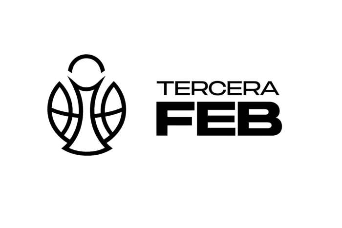

Junior
- Masculino Próximamente
- Femenino Próximamente
El primer equipo masculino compite en Tercera FEB, el cuarto nivel del baloncesto nacional, dentro del grupo C junto a clubes de Cataluña, Baleares y Aragón. Todos los resultados, la clasificación y el calendario se publican en la web oficial de la Federación Española de Baloncesto.

Consulta la ficha oficial del equipo en la Federación Española de Baloncesto (FEB).
Los equipos senior del club compiten en las competiciones de la Federación Aragonesa de Baloncesto (FAB).
Segunda Aragonesa
Competición FAB
Desde Baby Basket hasta junior, nuestros equipos base compiten cada fin de semana, de septiembre a mayo, en las competiciones de la Federación Aragonesa de Baloncesto (FAB). Aquí irán sus resultados y clasificaciones.
Grupo de entrenamiento social, formado por más de treinta mujeres.
El club también ofrece actividades extraescolares en los colegios de Barbastro. Conoce el club.